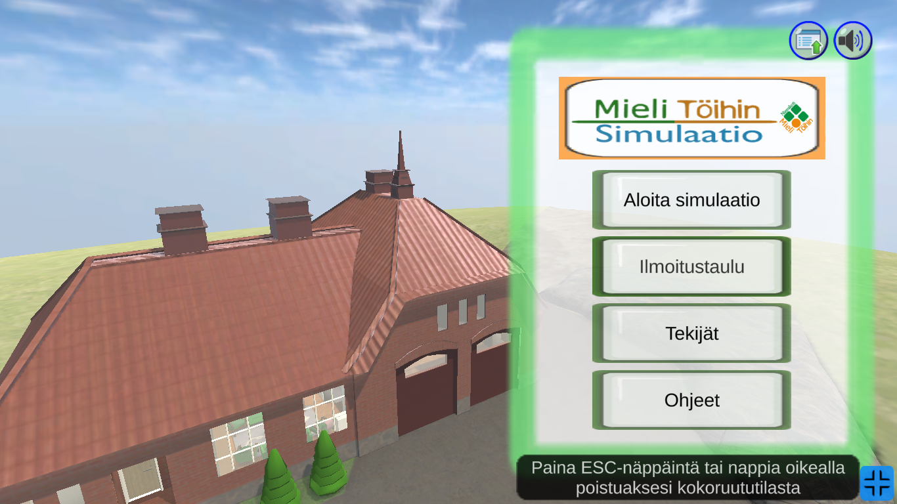
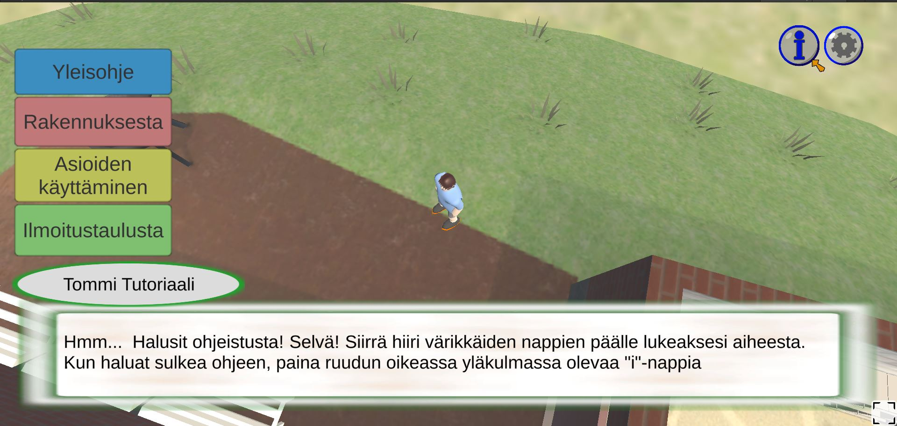
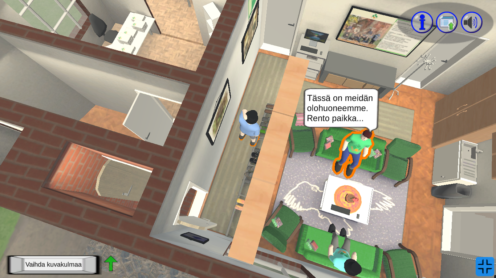

Mieli Töihin Simulaatio is a browser game that I created during my apprenticeship at Mieli Töihin® -valmennusyksikkö. Mieli Töihin® -valmennusyksikkö offers its services to mental health rehabilitators in Helsinki. The goal is to help the users of the services in improving their information and communication technology skills and in matters related to employment and studies. The unit specializes in information technology-focused coaching and the operating model was developed in Mieli Töihin® -valmennusyksikkö.
September 2020, I started studying Information and Communication Technologies (ICT) at Business College Helsinki. I didn’t enjoy my studies there, so I applied for an apprenticeship to Mieli Töihin® -valmennusyksikkö. To my luck they accepted my application. I worked there for a little bit over a year mostly creating Mieli Töihin Simulaatio. I also provided technical support by teaching Blender and Photoshop to mental health rehabilitators.
When I first started working on Mieli Töihin Simulaatio, my priority was to get the building as accurate as possible since the visuals were most important part of the job. The first few months went into perfecting it as much as possible. This was a fine approach since the building was never changed much but the furniture objects were moved around which meant that the shadows needed to baked multiple times.
A lot of the game design for this project focused on making the game as easy as possible to control. I decided very early on that the game should have two views. One view is from above where you can move and see the building. The other view is that you are in first person view to check around more closely. Now looking back this approach of two different game views makes sense but maybe a bit difficult for people who are not familiar with computers.
I worked hard to make this game as good as it can. This meant a lot of optimizations in code but mostly in size. The most memorable experience I have working on this project was the size reduction. I had never made a game for the browser, so I had no idea how much I needed to cut the size of this project. After I cut all the temporary assets from the project, the game was around 200 MB, and the goal was to get it around 60MB. Last few months of the project was spent on optimizing the textures, sounds and sprites. At the end the game was 65 MB and was running efficiently.
The game was uploaded to their website and was up for a couple of years. However, when the organization updated their website, they didn’t upload the game, though they kept the game's intro as a standalone video.
I learned a lot while working at Mieli Töihin® -valmennusyksikkö and I appreciate my time there.